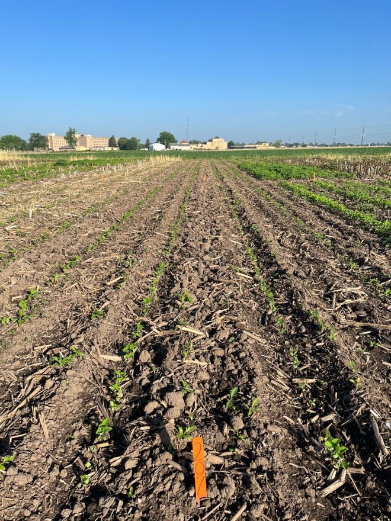

As growers across the Upper Midwest continue to adopt cereal rye cover crop and/or plant their soybean crop earlier in the season, research investigating how these agronomic decisions influence weed communities and best management practices is warranted.
According to our stakeholder surveys, giant ragweed (Ambrosia trifida), an early-emerging and competitive species, is among the most troublesome weeds in soybean cropping systems across the Upper Midwest (Figure 1).

In Wisconsin, giant ragweed populations with extended emergence pattern (from April through late June/early July) are common (Figure 2).

Thus, a field study was conducted in 2021 and 2022 at the Rock County Farm, Janesville, WI to evaluate the impact of soil and cereal rye cover crop management practices, soybean planting time, and PRE-emergence herbicide application on giant ragweed management in soybean.

Our Integrated Giant Ragweed Management Study Consisted of:
FOUR soil management strategies: conventional tillage (chisel-plow in the fall and field cultivator in the spring), no-till, and fall-planted cereal rye cover crop terminated at two different times: early terminated (10-14 days before planting) and late terminated (planting green; termination within three days after planting) with Roundup PowerMax @ 32 fl oz/acre (glyphosate [Group 9]). Figures 4 and 5.
TWO soybean planting times: early (late-April/early-May) versus late (late-May).
TWO PRE-emergence herbicide treatments: no PRE versus yes PRE (Sonic @ 6.45 fl oz/acre; sulfentrazone [Group 14] + cloransulam [Group 2]).
To simulate common practices adopted by soybean growers, Enlist One @ 2 pts/acre + Roundup PowerMax @ 32 fl oz/acre (2,4-D-choline [Group 4] + glyphosate [Group 9]) were applied POST-emergence when ~50% of giant ragweed plants within a treatment reached ~4 inches in height.
Preliminary Results:
According to our preliminary results, delaying cereal rye termination in the spring by 3 to 4 weeks allowed the cover crop to accumulate four times more biomass when compared to the earliest time of termination (500 lb/acre compared to 2,100 lb/acre). In this study, a later maturing cereal rye variety (Guardian winter rye variety) was drilled into heavy corn stubble in the fall thus the relative low biomass accumulation in the spring compared to other WiscWeeds studies were an earlier maturity cereal rye variety (Aroostook winter rye variety) was adopted. See "What benefits (and challenges) can the planting green system bring to soybean production?".
Early-planted soybean treatments were the first to require a POST application compared to late-planted soybean treatments.
In 2021, tillage treatments were amongst the first to require a first POST application and had double the giant ragweed density compared to the other treatments (tillage stimulated additional giant ragweed emergence).
PRE herbicide and cereal rye cover crop did not impact giant ragweed density at the time of a first POST application as expected. The large seeded nature of giant ragweed makes its control with residual herbicides and cover crops difficult. This is the opposite from small seeded weed species such as waterhemp. See "How we believe cereal rye cover crop suppresses waterhemp".


Impact of Cereal Rye Cover Crop on Giant Ragweed Establishment:
The amount of cereal rye cover crop biomass accumulated in this study ranged from 500 to 2,100 lbs of dry biomass per acre, with lower values for the early termination ahead of the early-planted soybean and the higher values for late termination ("planting green") on late-planted soybean.
An additional study was conducted during the 2022 growing season to quantify the amount of cereal rye dry biomass necessary to effectively suppress giant ragweed emergence (Figure 6). The results of the first year of this study showed that ~4,000 lbs of dry cereal rye cover crop biomass was needed to suppress emergence of new giant ragweed seedlings by 50%.
The results of this additional study help us explain why the cereal rye cover crop treatments in our main study were unable to effectively suppress giant ragweed: the cover crop in our plots did not accumulate enough biomass at the time giant ragweed seedlings were actively emerging (e.g., active giant ragweed emergence starts and occurs for the most part before a cereal rye cover crop is actively growing and has accumulated substantial biomass in the spring under Wisconsin conditions).

Both of these studies will be replicated in 2023 to validate the results observed during the 2021 and 2022 growing seasons. Thus, stay tuned for plot tours and additional information from these studies during the 2023 growing season!
Given the nature and biology of giant ragweed in Wisconsin, tillage and/or effective chemical burndown to eliminate established plants at the time of crop establishment and effective POST-emergence programs (foliar control) are necessary management practices. Remember that giant ragweed seed has short viability in the soil seedbank (most giant ragweed seeds die after 2 years in the soil). Thus, after a couple years of intensive management (no giant ragweed escapes producing new seed), giant ragweed infestations should become minimal. Check this giant ragweed article for additional information.
The research reported herein is being led by Guilherme Chudzik (WiscWeeds MS student). Click here to see Chudzik’s poster presented during the 2022 North Central Weed Science Society Meetings (December 2022) in St. Louis, MO. Chudzik received a NCWSS Graduate Student Travel award to attend the 2022 conference and present his MS research (congrats Guilherme!).
Additional resources:
This article was written by Guilherme Chudzik (MS Student), Nick Arneson (Outreach Program Manager), and Rodrigo Werle (Assistant Professor). All authors are affiliated with UW-Madison.
Thanks to the WiscWeeds team and Rock County Farm staff for assisting this research.